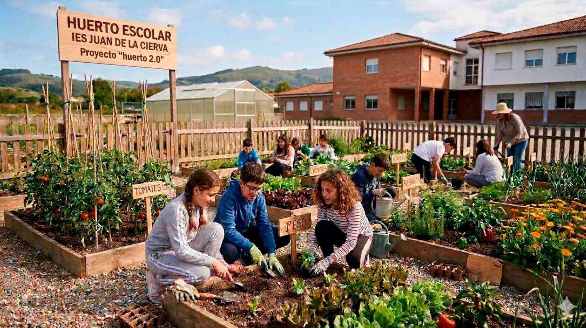

Comenzamos nuestro Proyecto

SDA. "Huerto 2.0". Imagen generada con Gemini. Uso educativo
1- NIVEL AL QUE VA DIRIGIDO:
Este proyecto esta diseñado para el alumnado de 1º de ESO.
Justificación:
Nos basamos en los buenos resultados obtenidos en cursos anteriores en los trabajos desarrollados en el huerto escolar como promotor de hábitos saludables y de respeto al medio ambiente.
2- ÁREAS IMPLICADAS:
Biología- geología, matemáticas, tecnología y educación física.
Justificación:
La elección de estas materias se debe a que la actividad expuesta en la rutina de pensamiento se centraba en el desarrollo de competencias específicas de la materia de biología-geología, utilizando las matemáticas de forma transversal (áreas, litros de riego….).
3- CENTRO DE INTERÉS:
El centro de interés es la creación y el desarrollo de un huerto escolar en la que se cultiven productos ecológicos.
4- TEMPORALIZACIÓN:
Se desarrollará durante el segundo y tercer trimestre del curso.
Justificación:
Se trata de un proyecto a largo plazo por que depende de la época óptima de desarrollo de cada tipo de cultivo. También coincide con el periodo en que se trabajan los saberes básicos relacionados con los seres vivos.
5- IDIOMA:
Se desarrolla en idioma español.
Justificación:
El centro no es bilingue.
6- DESCRIPCIÓN GENERAL:
"Nuestro huerto 2.0" es el título de la Situación de Aprendizaje a desarrollar con el alumnado de 1º de ESO.
El producto final será la obtención de un documento digital, que el alumnado debe elaborar y exponer haciendo uso de herramientas digitales (APP PlantNet, Camba, Genially, Power Point o video) del proceso seguido, de los datos que ha ido recogiendo, y de los resultados que ha obtenido en el cultivo y mantenimiento del huerto escolar del centro.
Para ello realizaremos las siguiente actividades:
- Actividades de motivación: mediante videos y exposición de fotos de los productos cosechados en años anteriores.
- Actividades de activación y exploración: con dinámicas de trabajo para la activación de conocimientos previos sobre la naturaleza (germinación de semilla en vaso y estructura de la planta que ya trabajaron en primaria).
- Actividades de estructuración: para empezar a adquirir nuevos saberes básicos, mediante la preparación del huerto (tipos de herramientas, labrado, disposición de agua, abonado….).
- Actividades de aplicación: siembra directa y mantenimiento de cultivos in situ.
- Actividades de conclusión: recolección de cultivos, análisis y exposición digital de resultados.